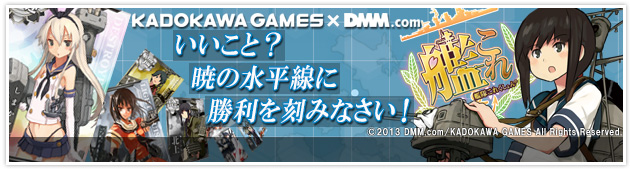

艦隊Collection
 日本wiki
日本wiki

艦隊これくしょん -艦これ攻略 Wiki*
『艦隊これくしょん -艦これ-』は、DMM.comと角川ゲームスが共同開発した、新しいタイプのソーシャルゲームです。 旧日本軍の駆逐艦や軽巡洋艦、重巡洋艦を擬人化した「艦娘（かんむす）」で、艦隊を編成、育成、強化しながら、無敵の連合艦隊を目指す育成シミュレーションゲームです。
艦隊これくしょん -艦これ攻略 Wiki*
『艦隊これくしょん -艦これ-』は、DMM.comと角川ゲームスが共同開発した、新しいタイプのソーシャルゲームです。 旧日本軍の駆逐艦や軽巡洋艦、重巡洋艦を擬人化した「艦娘（かんむす）」で、艦隊を編成、育成、強化しながら、無敵の連合艦隊を目指す育成シミュレーションゲームです。